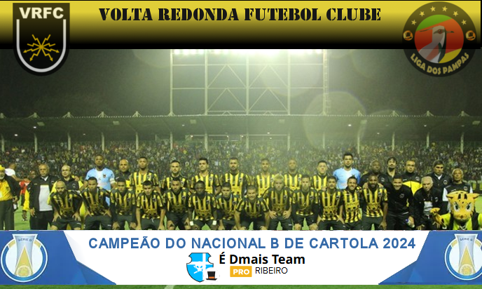
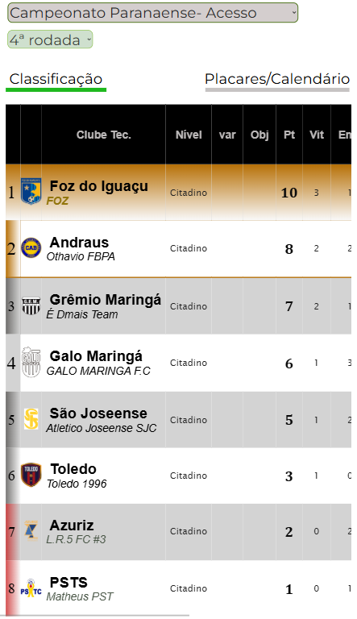
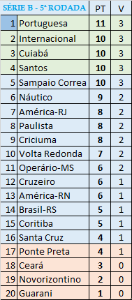
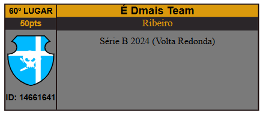
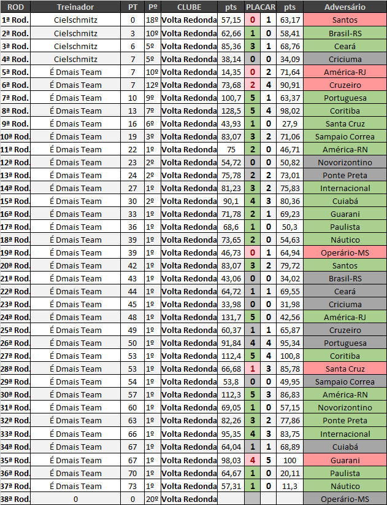

Campeonato de Cartola
A vitória no cartola é o sucesso do seu time!

Redação Cartola - 08/12/2024 - 06h50min 
Comandado pelo "ÉDmais Team" um dos técnicos revelação da temporada. "voltaço" superou gigantes favoritos ao título como Santos, Internacional e Cruzeiro.
Técnico estreante na competição de campeonato de clubes de cartola, cartoleiro Ribeiro iniciou a carreira assumindo o modesto Grêmio Maringá, na inexpressiva segunda divisão do campeonato paranaense. Naquele campeonato, treinador precisou de apenas quatro jogos para chamar a atenção do Volta Redonda, levando o Grêmio de Maringá, até aquele momento, a disputar, de igual para igual ,com Foz do Iguaçu e Andraus por uma das duas vagas de acesso à elite paranaense de 2025, ao passo que o Volta Redonda havia arrancado a série "B" "mal das pernas", na décima colocação.  
Estreando no Voltaço na quinta rodada, equipe foi derrotada pelo Santos, com as seis primeiros rodadas se caracterizando como o período de maior turbulência sob a batuta do "ÉDmais Team", logrando 3 derrotas 1 empate e duas vitórias.
A partir da sétima volta, clube teve um desempenho incrível, acumulando séria invicta de 12 partidas, registrando 10 vitórias e dois empates, o que ajudou na consolidação da primeira colocação a partir da 16ª rodada,
Com 73 pontos e restando ainda a última rodada para ser jogada, contra o Operário-MS, 'ÉDmais Team' poderá igualar a marca do "Gardena Show", campeão da Série A do ano passado com o Sport Recife, alcançando os 76 pontos, até hoje a maior campanha dentre todas as divisões nacionais.
Treinador campeão faturou 331 reais e 50pts no ranking geral de treinadores. Já o clube obteve obteve acesso à disputa da Copa do Brasil a partir das oitavas-de-finais.
Com o título, "Sellegalo F.C", do cartoleiro RIBEIRO, passa a ocupar a 60ª colocação no ranking de treinadores, 
Parabéns "ÉDmais Team". Abaixo, toda a campanha do campeão da série B de 2024. 